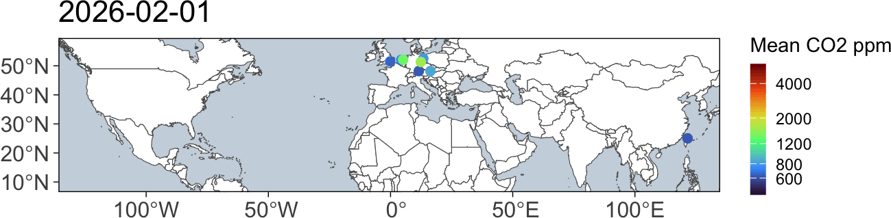
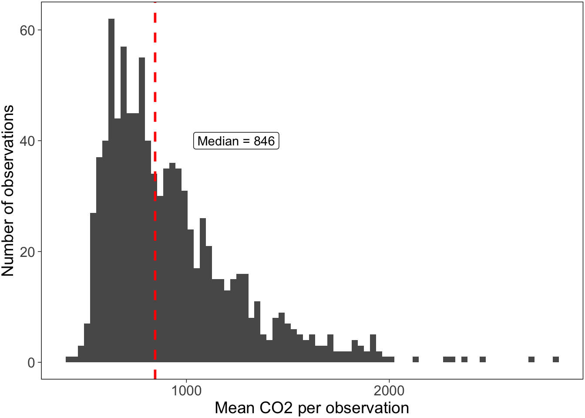
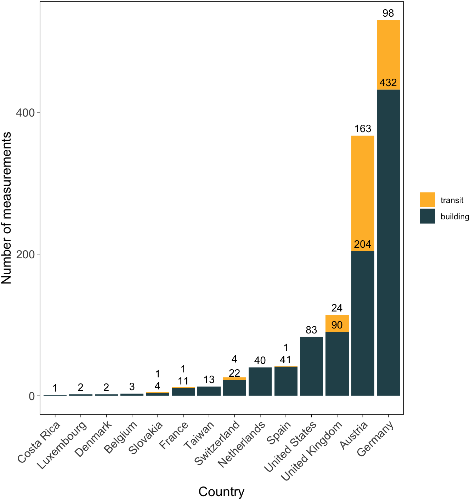
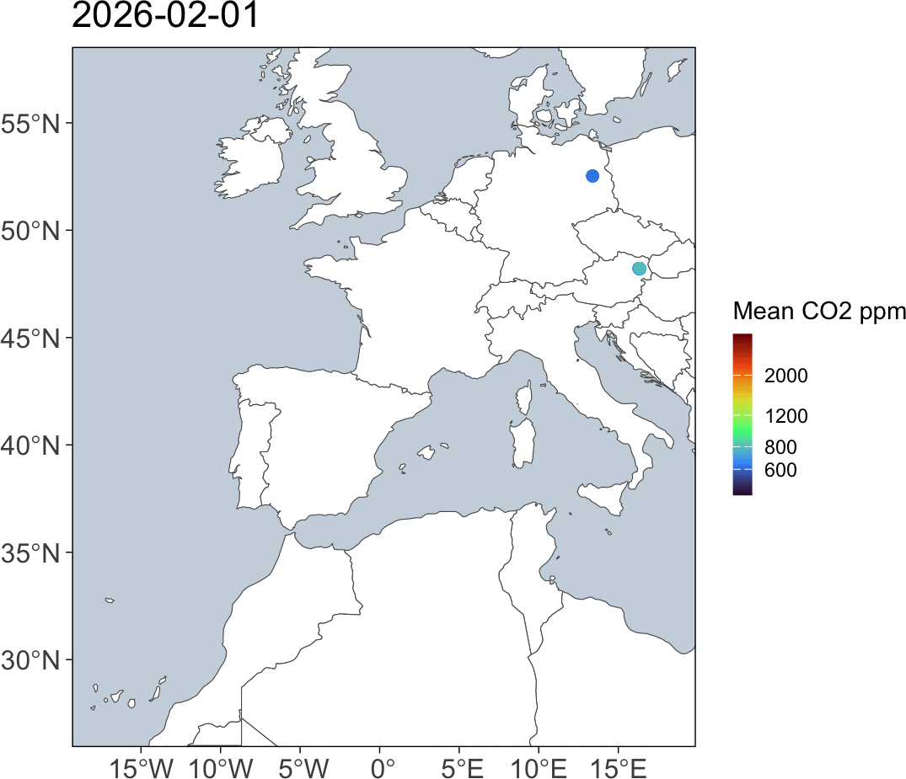

Monthly indoorCO2map.com summary January 2026
There is a well documented relationship between indoor levels of CO2 and the amount of ventilation in indoor environments. Buildings with high indoor levels of CO2 have poor ventilation and are therefore more likely to be vectors of airborne diseases (like COVID-19, Measles, and Flu) and to trap indoor pollutants.
Measuring CO2 inside is a cheap way of measuring the air quality in indoor environments. When we breathe, we exhale CO2 and it gets trapped inside the room we are in. If the building has good ventilation it will leave quickly. If it has bad ventilation, it stays in the room and builds up.
If there is bad ventilation, then smoke from cooking can build up and that’s bad for you. Same thing for VOCs from perfumes, as well as gas leaks, radon, and mold spores. At high concentrations in artificial environments, they contribute to all sorts of things: cancer1, Alzheimer’s2–4, Parkinson’s3, childhood asthma5–9, childhood lung problems10,11, and heart conditions12. Bad ventilation also contributes to a much higher risk of respiratory infections. If someone who is sick breathes in a badly ventilated room, the infectious aerosols will float around in the room until someone breathes them in. In a well ventilated space, they are dispersed very quickly and the risk of infection is much lower. Having an open window in a classroom (or having an air filter), for instance, reduces school absences significantly.
CO2 levels outside are typically around 420 parts per million (ppm), so if we measure the CO2 in a room and it is higher than that, you know its not ventilating much. Anywhere from 400 - 600 ppm are considered well ventilated. Every indoor environment is going to trap some CO2 and that’s okay. Levels between 600 ppm and 1000 ppm may need some improvement. Anything above 1000 ppm is generally considered bad and should certainly be improved in some manner.
Indoor CO2-Map is a community science project to monitor indoor CO2 levels in non-residential buildings and transit systems around the world. Since April 2024 volunteers have brought CO2 monitors into cafes, shops, schools, trains, and all sorts of other places to monitor CO2 levels in them and upload them to a public database.
The following is a monthly summary of how this project is going.
Buildings
This month there were 963 measurements of 739 unique buildings.
The most measured building was Rewe, a supermarket in Kassel, Germany (min: 682, mean: 773, max: 844), which was measured 13 times.
There were measurements in 24 separate countries. Additionally, the first measurement was added in Taiwan this month. Welcome to the glorious world of CO2 monitoring Taiwan!
Here is a graph that shows the distribution of all the CO2 measurements this month. The dashed red line shows the median which was 846 ppm. There are many measurements that we would consider good CO2 levels, however, you’ll notice that about 32 percent are over 1000 ppm, which really should be addressed.
This graph shows the distribution of the most common building types in the month of January. The dark bar in the middle of each box and whisker plot shows the median value for each category. The rest of the lines show the range of the distribution. Most of the values fall within each box. If you want more information about how to interpret this graph, watch this video.
As is common, supermarkets tend to have higher CO2 values than other types of buildings. I’ve converted those CO2 values to the percentage of rebreathed air, which specifies how much of each breath you take has already been exhaled by someone else.
Here is a graph of all the recordings that happened this month shown by the grey curves. I’ve highlighted the highest one.
The building with the highest measured CO2 levels was CineStar in Saarbrücken, Germany with a median CO2 value of 6593 ppm. While this is incredibly high, it is important to realize that this is an outlier. The majority of measurements are much lower than this. There is a boxplot to the right of the graph which shows where the majority of measurements fall.
The building with the lowest measured CO2 levels was Lidl in Wolfsberg, Austria with a median CO2 value of 419.5 ppm. There were some measurements that were even lower than this, but we have removed them from this analysis. Generally outdoor CO2 levels don’t go below 410 ppm, therefore we have removed any datapoints that are below 400 ppm. If your CO2 monitor consistently shows levels below 410 ppm while you are inside or outside, it is likely that your monitor needs recalibrating.




Here is a chart showing the 7 measurements that had a median CO2 value under 500. Keep in mind that some of these are potentially miscalibrated sensors or erroneous recordings where the sensor was outside. However, it is important to celebrate the places that do in fact have well ventilated spaces.
| Measurements under 500 ppm | |||
|---|---|---|---|
| Name | CO2 ppm | Building type | Location |
| ESO Supernova Planetarium | 494.0 | Planetarium | Garching bei München, Germany |
| CVS Pharmacy | 493.0 | Pharmacy | Iowa City, United States |
| Liverpool Street | 489.0 | City of London, United Kingdom | |
| Rådhuspladsen | 443.0 | Station | København, NA |
| 了凡油雞飯.麵 | 483.0 | Restaurant | 桃園市, Taiwan |
| Lidl | 419.5 | Supermarket | Wolfsberg, Austria |
| Palí | 475.0 | Supermarket | La Fortuna, Costa Rica |
Trends over time

The following are charts that are updated every month, but they reflect all data collected so far from the indoorco2 monitoring project (since April 2024). Over time, we should be able to see yearly trends where CO2 levels are higher in the Winter when shopkeepers close their windows to keep things warm and then lower CO2 levels when shopkeepers open their windows in the Summer.
We can start to see trends like in this graph which shows CO2 against the week of the year. There are two relevant points you should know about the X axis, Week of the year (meteorological), before moving on.
Datapoints are aggregated into weeks regardless of the year they are collected in, so some weeks were measured in 2024, 2025 and 2026 but they would all show up in the same week number.
This accounts for the hemisphere in which the recording was collected. Since Winter in the Southern Hemisphere is June through August, while Winter in the Northern Hemisphere is December through February, we have adjusted the week numbers so that they line up meterologically. Essentially, a measurement collected in the Northern Hemisphere on the first of January would show up as week 1, however, a measurement collected in the Southern Hemisphere on the first of January would show up as week 27.
If we split the graph by the most popular building types, we can start to see some interesting trends. Supermarkets remain relatively high throughout the year with little variation while fast food, and chemists have quite a strong dip in CO2 levels during the Summer. This may be because most supermarkets keep their doors closed throughout the year and they tend to have larger buildings; conversely, chemists and fast food restaurants tend to be small to medium sized buildings which means that they can be very easily ventilated if they leave their front door open in the Summer. Restaurants have a very interesting trend here, the strong upward trend of the model at the end of the year is probably due to not enough measurements of restaurants yet rather that there being any meaningful conclusions. Over time we should hopefully see more stable trends show up.
Here’s a histogram showing how many measurements have been recorded each week since the start of the project. Over the last 12 months there have been 10707 building measurements which is 892 per month or 206 per week.


Transit

This month there were 341 measurements of 169 unique transit lines. The most measured transit line was subway U6 in the U-Bahn Wien transit network in Wien, Austria (min: 491, mean: 737, max: 1187), which was measured 20 times. This graph shows the number of transit recordings in each transit network during the last month. Keep in mind that this graph only shows networks with more than 2 transit recordings this month (there were quite a few with one or two). Transit recordings seem very popular in Vienna at the moment.
When we look at the distribution of CO2 measurements by the transit type this month we can see some patterns. Trains often have higher CO2 values than buses, subways and trams because they usually travel for longer distances between stations. This causes trains to rely more heavily on mechanical ventilation than buses, subways, and trams which open their doors at stations more frequently.
This trend can also be seen when we look at the distribution of each transit type on all the data from 2024, 2025 and 2026.


That’s all for this month! Check back soon for more updates.
If this was useful to you, please consider supporting me so I can make more things like this. I would be incredibly grateful.

Some news
Recently Aurel Wünsch and I gave a talk about this project at Fluconf 2026. Check out the recording here, and the companion website here.
I was also interviewed for a podcast. You can listen to the recording here.
Some thanks
This work would not be possible without the hard work of all the contributors to OpenStreetMap and indoorco2map. If you would like to contribute to either of these projects, please visit their websites. You can contribute to the indoorco2map by downloading the Android app or iOS app and connecting it to any one of the following CO2 sensors: Aranet4, Airvalent, AirSpot and Inkbird IAM-T1. You can also donate by contributing to the indoorCO2map gofundme.
I would also like to thank Aurel Wünsch who tirelessly works on the project as well as the other contributors to the project ahunt, da5nsy, paul-hammant, and samherniman.
Finally, many thanks go to the teams who work on the following software, which I used heavily.
We used R v. 4.4.313 and the following R packages: autocruller v. 0.0.0.900014, dbscan v. 1.2.415,16, duckplyr v. 1.1.3.900717, gganimate v. 1.0.1118, ggrepel v. 0.9.619, glue v. 1.8.020, gt v. 1.2.021, h3 v. 3.7.222, here v. 1.0.223, mapview v. 2.11.424, osmdata v. 0.3.025, pak v. 0.9.226, patchwork v. 1.3.227, rmarkdown v. 2.3028–30, rnaturalearth v. 1.2.031, rnaturalearthhires v. 1.0.0.900032, scales v. 1.4.033, scico v. 1.5.034, sf v. 1.0.2435,36, tidygeocoder v. 1.0.637, tidyplots v. 0.4.038, tidyverse v. 2.0.039.
All figures in this report are licensed under CC BY-SA 4.0

 . Please feel free to use and remix them and let me know if you do. I love to see my work being used elsewhere!
. Please feel free to use and remix them and let me know if you do. I love to see my work being used elsewhere!
References
1.
Guzman, R. D. & Schiller, J. Air pollution and its impact on cancer incidence, cancer care and cancer outcomes. bmjonc 4, (2025).
2.
Fu, P. & Yung, K. K. L. Air pollution and alzheimer’s disease: A systematic review and meta-analysis. Journal of Alzheimer’s Disease 77, 701–714 (2020).
3.
Shi, L. et al. Long-term effects of PM2·5 on neurological disorders in the american medicare population: A longitudinal cohort study. Lancet Planet Health 4, e557–e565 (2020).
4.
Olloquequi, J. et al. From inhalation to neurodegeneration: Air pollution as a modifiable risk factor for alzheimer’s disease. International Journal of Molecular Sciences 25, 6928 (2024).
5.
Akar-Ghibril, N. & Phipatanakul, W. The indoor environment and childhood asthma. Curr Allergy Asthma Rep 20, 43 (2020).
6.
Rosser, F. et al. Air quality index and emergency department visits and hospitalizations for childhood asthma. Annals ATS 19, 1139–1148 (2022).
7.
Pan, R. et al. Interactions between climate factors and air quality index for improved childhood asthma self-management. Science of The Total Environment 723, 137804 (2020).
8.
Breysse, P. N. et al. Indoor air pollution and asthma in children. Proc Am Thorac Soc 7, 102–106 (2010).
9.
Hulin, M., Caillaud, D. & Annesi-Maesano, I. Indoor air pollution and childhood asthma: Variations between urban and rural areas. Indoor Air 20, 502–514 (2010).
10.
Maung, T. Z., Bishop, J. E., Holt, E., Turner, A. M. & Pfrang, C. Indoor air pollution and the health of vulnerable groups: A systematic review focused on particulate matter (PM), volatile organic compounds (VOCs) and their effects on children and people with pre-existing lung disease. International Journal of Environmental Research and Public Health 19, 8752 (2022).
11.
Kurmi, O. P., Lam, K. B. H. & Ayres, J. G. Indoor air pollution and the lung in low- and medium-income countries. European Respiratory Journal 40, 239–254 (2012).
12.
Uzoigwe, J. C., Prum, T., Bresnahan, E. & Garelnabi, M. The emerging role of outdoor and indoor air pollution in cardiovascular disease. N Am J Med Sci 5, 445–453 (2013).
13.
R Core Team. R: A Language and Environment for Statistical Computing. (R Foundation for Statistical Computing, Vienna, Austria, 2025).
14.
15.
Hahsler, M., Piekenbrock, M. & Doran, D. dbscan: Fast density-based clustering with R. Journal of Statistical Software 91, 1–30 (2019).
16.
Hahsler, M. & Piekenbrock, M. dbscan: Density-Based Spatial Clustering of Applications with Noise (DBSCAN) and Related Algorithms. (2025).
17.
Mühleisen, H. & Müller, K. duckplyr: A “DuckDB”-Backed Version of “dplyr”.
18.
Pedersen, T. L. & Robinson, D. gganimate: A Grammar of Animated Graphics. (2025).
19.
Slowikowski, K. ggrepel: Automatically Position Non-Overlapping Text Labels with “ggplot2”. (2024).
20.
Hester, J. & Bryan, J. glue: Interpreted String Literals. (2024).
21.
Iannone, R. et al. gt: Easily Create Presentation-Ready Display Tables. (2025).
22.
Kuethe, S. H3: R Bindings for H3. (2022).
23.
Müller, K. here: A Simpler Way to Find Your Files. (2025).
24.
Appelhans, T., Detsch, F., Reudenbach, C. & Woellauer, S. mapview: Interactive Viewing of Spatial Data in r. (2025).
25.
Mark Padgham, Bob Rudis, Robin Lovelace & Maëlle Salmon. Osmdata. Journal of Open Source Software 2, 305 (2017).
26.
Csárdi, G. & Hester, J. pak: Another Approach to Package Installation. (2025).
27.
Pedersen, T. L. patchwork: The Composer of Plots. (2025).
28.
Xie, Y., Allaire, J. J. & Grolemund, G. R Markdown: The Definitive Guide. (Chapman; Hall/CRC, Boca Raton, Florida, 2018).
29.
Xie, Y., Dervieux, C. & Riederer, E. R Markdown Cookbook. (Chapman; Hall/CRC, Boca Raton, Florida, 2020).
30.
Allaire, J. et al. rmarkdown: Dynamic Documents for r. (2025).
31.
Massicotte, P. & South, A. rnaturalearth: World Map Data from Natural Earth. (2026).
32.
South, A., Michael, S. & Massicotte, P. rnaturalearthhires: High Resolution World Vector Map Data from Natural Earth Used in Rnaturalearth. (2025).
33.
Wickham, H., Pedersen, T. L. & Seidel, D. scales: Scale Functions for Visualization. (2025).
34.
Pedersen, T. L. & Crameri, F. scico: Colour Palettes Based on the Scientific Colour-Maps. (2023).
35.
Pebesma, E. Simple Features for R: Standardized Support for Spatial Vector Data. The R Journal 10, 439–446 (2018).
36.
Pebesma, E. & Bivand, R. Spatial Data Science: With applications in R. (Chapman and Hall/CRC, 2023). doi:10.1201/9780429459016.
37.
Cambon, J., Hernangómez, D., Belanger, C. & Possenriede, D. tidygeocoder: An r package for geocoding. Journal of Open Source Software 6, 3544 (2021).
38.
Engler, J. B. Tidyplots empowers life scientists with easy code-based data visualization. iMeta e70018 (2025) doi:10.1002/imt2.70018.
39.
Wickham, H. et al. Welcome to the tidyverse. Journal of Open Source Software 4, 1686 (2019).